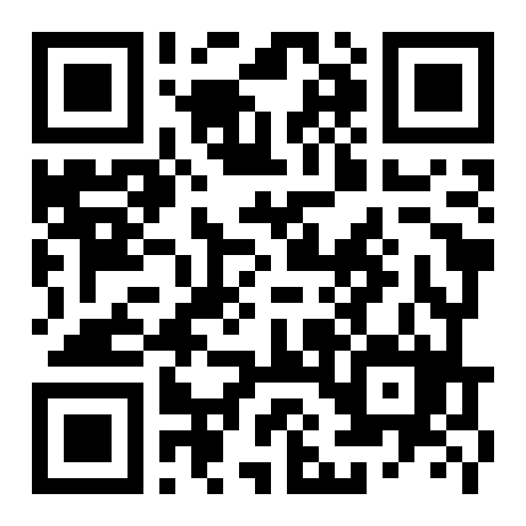

Il mio anno vale
Dal Servizio Civile al tuo prossimo passo. Risorse, strumenti e prompt per orientarti nei mesi successivi alla giornata di tutoraggio.
Costruisci il tuo Portfolio delle Competenze
Il Portfolio è il punto di partenza di tutto il percorso. La giornata di tutoraggio non costruisce il portfolio: lo rilegge, lo traduce in strumenti operativi e lo collega a una direzione. Senza Portfolio (o senza un suo surrogato) le 5 stazioni non possono lavorare al meglio per te.
Cos'è il Portfolio
Una mappa visiva e narrativa di ciò che hai imparato durante il Servizio Civile, organizzata sui quattro framework europei delle competenze. Per ogni competenza che riconosci come tua, scrivi un episodio reale del tuo anno di servizio: non un concetto astratto, ma una storia osservabile.
Esempio: invece di "ho imparato il lavoro di squadra", scrivi "ho gestito i turni della mensa coordinandomi con 4 colleghi durante un'emergenza".
I quattro framework di competenze
LifeComp
Competenze personali, sociali e imparare a imparare. Tre aree: Personal, Social, Learning to Learn.
GreenComp
Competenze per la sostenibilità ambientale. Due aree principali: valori di sostenibilità e pensiero sistemico.
EntreComp
Competenze imprenditoriali e spirito di iniziativa. Tre aree: Ideas & Opportunities, Resources, Into Action.
DigComp 3.0
Competenze digitali per i cittadini. Cinque aree, dall'alfabetizzazione informativa al problem solving digitale.
Come costruirlo in 6 passi
-
1
Esplora la galleria delle competenze
Apri lo strumento online e naviga tra le carte colorate dei quattro framework. Ogni carta è una competenza chiave europea. Zooma, leggi le descrizioni, prenditi il tempo necessario.
-
2
Scegli le competenze che senti tue
Mentre leggi, individua quelle che hai effettivamente allenato, scoperto o messo alla prova durante il servizio. Aggiungile al tuo Portfolio dal cerchio in alto a destra di ogni carta.
-
3
Racconta le tue esperienze (post-it virtuali)
Nella sezione "Mio Portfolio", sotto ogni carta scelta, scrivi un episodio concreto: chi, cosa, dove, con quale esito. Non concetti astratti: storie verificabili.
-
4
Esporta in PDF e condividi
Quando il Portfolio è completo, scaricalo in PDF e caricalo nella bacheca digitale predisposta dal formatore. Tienilo a portata di mano: lo userai nelle 5 stazioni.
-
5
Peer feedback in bacheca
Esplora i Portfoli degli altri volontari sulla bacheca. Lascia un commento, un'emoji, un "mi piace" sui post-it che ti colpiscono. È così che il portfolio diventa apprendimento reciproco.
-
6
Pronti per la plenaria e per la giornata
Nella sessione plenaria di chiusura del lavoro online si osserva la mappa visiva collettiva: quali aree sono più ricche, quali rimangono vuote. Da lì si entra in giornata con il Portfolio già rivisto.
Si apre in una nuova scheda · scaffold-design-kit.vercel.app
Se arrivi senza Portfolio
Con 100 partecipanti è statisticamente certo che qualcuno arriverà senza Portfolio (non finalizzato, non recuperato, dimenticato). All'ingresso ti sarà consegnata la scheda-ponte di emergenza M0: cinque domande in cinque minuti per estrarre comunque l'essenziale della tua esperienza. È una surroga per la giornata, non un sostituto: prima possibile recupera la costruzione completa del Portfolio.
Quando costruirlo
Il Portfolio non va costruito la sera prima della giornata. Il momento giusto è nelle ultime settimane di servizio, idealmente prima del colloquio individuale PRE: arrivare al colloquio con il Portfolio già fatto permette al tutor di lavorare sulle competenze nominate invece che sulla loro raccolta. Pianifica 2–3 sessioni da 60–90 minuti distribuite su una settimana.
Una bussola per i mesi dopo il Servizio Civile
Questo sito accompagna la giornata di tutoraggio collettivo e sostiene il follow-up. Non sostituisce l'aula: la integra con risorse curate, prompt da usare con un'AI e indicazioni per i colloqui individuali con il tuo tutor.
Strumenti europei
Youthpass, Europass, Erasmus+, ESC, Eures. Link ufficiali e indicazioni d'uso essenziali.
Vai alla sezione →Tutor virtuale
Sei prompt pronti da copiare e incollare in ChatGPT, Claude, Gemini o Copilot.
Vai ai prompt →Schede e follow-up
Le schede della giornata, indicazioni per i colloqui individuali e per il Piano di Ricerca.
Vai alle schede →La mappa della giornata
Sei ore in presenza, articolate in 5 stazioni di lavoro più una plenaria sugli strumenti europei e una scheda di chiusura.
Accoglienza
Registro presenze, distribuzione del kit di giornata.
Apertura plenaria
Presentazione degli obiettivi orientativi e case history di ex-volontario SCU. Compilazione della scheda M1 "Il mio punto di partenza".
Divisione gruppi
Badge colorati ai tavoli, briefing rotazioni e istruzioni operative.
5 rotazioni nelle stazioni (35' ciascuna)
CV e lettera, pitch e colloquio, formazione, profili professionali, imprenditorialità e intraprenditorialità. Cambio stazione di 5 minuti tra una rotazione e la successiva.
Cambio stazione → Plenaria
Spostamento ordinato verso la plenaria.
Plenaria: sintesi del piano
Iannis traccia la cornice del «Mio Piano» e introduce la rielaborazione delle schede delle 5 stazioni.
Lavoro individuale + pausa pranzo
Riorganizzazione dei materiali e prima stesura del piano individuale, intervallato dalla pausa.
Restituzione rapida dei gruppi
5 Leader × 3' con un'intuizione utile per gruppo + lettura trasversale del coordinatore (10').
Valutazione intermedia
Due domande in plenaria su post-it: cosa sta servendo, cosa ancora non funziona.
Plenaria Youthpass
Strumenti europei: Youthpass, Europass, Erasmus+, ESC, Eures (20').
M-PPO Parte A — Bussola personale
Compilazione individuale silenziosa della Parte A del Piano Personale di Orientamento (identità, direzione, competenze, strumenti, mercato) + selezione delle 5 domande di orientamento (M-D). Formatori in supporto.
M-PPO Parte B — Piano d'azione breve (A4 portatile)
Compilazione della Parte B: azione 7gg, azione 30gg, prima persona da contattare, primo documento da aggiornare, bisogni per il colloquio POST. Pagina stampata e portata a casa. Assegnazione del tutor individuale.
Chiusura
Sintesi di Iannis, consegna dei Badge Leader, questionario di gradimento M9, cerimonia simbolica.
Le 5 stazioni di lavoro
Ogni stazione è costruita intorno a una domanda chiave orientativa che apre il lavoro, lo attraversa e si chiude in un output con valore di orientamento personale. I 5 gruppi (Blu, Rosso, Verde, Giallo, Arancione) ruotano partendo ciascuno da una stazione diversa, per un totale di 35 minuti a stazione.
Dal portfolio al CV e alla lettera
"Come traduco quello che ho fatto in qualcosa che un selezionatore capisce?"
CMS — Autoconoscenza: valori e obiettivi di carriera
Cosa produci: partendo dal proprio obiettivo, 3 frasi professionali per il CV (azione + contesto + destinatari + competenza + risultato) e l'abbozzo di una lettera di presentazione in 5 passaggi. Peer feedback a coppie su chiarezza dell'obiettivo, specificità, autenticità.
Modulo bando: GLI STRUMENTI
Vedi pagina dedicata →
Raccontarsi al colloquio: pitch e role playing
"Cosa porto di mio quando ho 90 secondi per presentarmi?"
CMS — Costruire relazioni e identità professionali
Cosa produci: un pitch personale di 90 secondi e tre round di role playing in triadi (candidato / selezionatore / osservatore), con scheda di osservazione e take away.
Modulo bando: GLI STRUMENTI
Vedi pagina dedicata →
Competenze e percorsi formativi
"Cosa mi serve imparare adesso per andare dove voglio andare?"
CMS — Sviluppare competenze e punti di forza
Cosa produci: la scheda M6 con la logica competenza posseduta → bisogno → percorso utile, la mappa dei fabbisogni del sottogruppo (corso breve, ITS, università, certificazione, Erasmus+) e la prima azione concreta di ricerca formativa.
Modulo bando: INFORMAZIONE E ORIENTAMENTO
Vedi pagina dedicata →
Dai Servizio Civile ai profili professionali
"Quali profili professionali sono già alla mia portata e quali con un piccolo investimento?"
CMS — Costruire e monitorare il mio percorso
Cosa produci: identificazione di 2 profili professionali coerenti con il portfolio (educazione, animazione territoriale, front office, segreteria sociale, comunicazione, facilitazione digitale, progettazione sociale, ecc.), matching in coppie con competenze presenti e da rafforzare, prima azione operativa per ciascun profilo.
Modulo bando: INFORMAZIONE E ORIENTAMENTO
Vedi pagina dedicata →
Imprenditorialità e intraprenditorialità
"Quale spazio di iniziativa posso aprire, dentro o fuori un'organizzazione, partendo da quello che ho imparato in servizio?"
CMS — Esplorare orizzonti futuri
Cosa produci: due binari complementari del mindset imprenditoriale. Binario A (M7-bis): mini canvas di sottogruppo per un'idea di autoimprenditorialità sociale. Binario B (M7-ter): scheda individuale di proposta intraprenditoriale a 4 quadranti per chi lavorerà come dipendente. Ciascun volontario chiude con una mossa concreta a 60 giorni.
Modulo bando: GLI STRUMENTI (autoimprenditorialità + mindset intraprenditoriale)
Vedi pagina dedicata →
Come funziona la rotazione
I 5 gruppi da 20 volontari ruotano simultaneamente, ciascuno partendo da una stazione diversa. Dentro ogni gruppo lavorano 4 sottogruppi da 4–5 persone: il formatore facilita e raccoglie, i sottogruppi producono. Il Leader di gruppo accompagna il gruppo per tutta la giornata e ne porta la voce nella restituzione finale.
Composizione gamificata: la divisione dei 5 gruppi avviene sulla base delle competenze dei volontari, attraverso la scelta di un Badge colorato in fase di registrazione (Blu, Rosso, Verde, Giallo, Arancione). Ogni gruppo candida un Leader di gruppo che riceve un Badge aggiuntivo (gamification): guida il gruppo nelle stazioni, sollecita il rispetto di tempi e compiti, presenta in plenaria le idee emerse.
Cornice formativa: le 5 stazioni sono laboratori tematici simultanei pensati per promuovere l'apprendimento delle competenze orientative (Career Management Skills) e intercettare i bisogni dei partecipanti in uscita dal percorso SCU.
Chi conduce la giornata
Un esperto guida regista del senso complessivo e cinque formatori, uno per stazione. A ciascun formatore è associata una specifica competenza orientativa CMS (Career Management Skills). Due dei cinque formatori — Antonella Di Spena e Chiara Aiello — svolgono anche il ruolo di tutor d'aula: presidiano i flussi di rotazione e seguono i partecipanti senza portfolio. Affiancano l'équipe il coordinatore della giornata e i tutor individuali per i colloqui PRE e POST. Cinque Leader di gruppo emergono dai volontari stessi e ricevono il Badge di competenza leader.
Giulio Iannis
Apre la giornata, osserva i gruppi, raccoglie evidenze, conduce la plenaria Youthpass e la restituzione finale. CMS: pianificare i prossimi passi.
Antonella Di Spena
Stazione 1 — Dal portfolio al CV e alla lettera. Presidia anche i flussi di rotazione come tutor d'aula. CMS: autoconoscenza — valori e obiettivi di carriera.
Chiara Aiello
Stazione 2 — Raccontarsi al colloquio: pitch e role playing. Presidia anche i flussi di rotazione come tutor d'aula. CMS: costruire relazioni e identità professionali.
Pasquale Scaramuzzino
Stazione 3 — Competenze e percorsi formativi. CMS: sviluppare competenze e punti di forza.
Antonio Scaramuzzino
Stazione 4 — Dai Servizio Civile ai profili professionali. CMS: costruire e monitorare il mio percorso.
Paride Posella
Stazione 5 — Imprenditorialità e intraprenditorialità. CMS: esplorare orizzonti futuri.
Strumenti europei di certificazione e mobilità
I cinque strumenti citati dal bando del Servizio Civile Universale. Tutti gratuiti, tutti ufficiali. Verifica sempre sui siti ufficiali prima di candidarti o iscriverti.
Certificato europeo per riconoscere le competenze acquisite in contesti di apprendimento non formale (Erasmus+, Corpo Europeo di Solidarietà). Si richiede online a fine progetto e descrive in modo strutturato cosa hai imparato.
youthpass.eu →Profilo personale e CV in formato europeo riconosciuto nei 27 Stati membri. Strumento consigliato (e talvolta richiesto) per concorsi UE, istituzioni scientifiche e mobilità Erasmus+. Disponibile in 31 lingue.
europass.europa.eu →Programma dell'Unione Europea per istruzione, formazione, gioventù e sport. Comprende opportunità di mobilità formativa, tirocini, volontariato giovanile e progetti di cooperazione.
erasmus-plus.ec.europa.eu →Programma di volontariato e tirocinio nel settore della solidarietà in Italia e in Europa, per giovani 18–30 anni. Naturale prosecuzione del Servizio Civile per chi vuole un'esperienza all'estero.
youth.europa.eu/solidarity →Rete europea di mobilità lavorativa: offerte di lavoro, profilo curriculare, consulenza per cercare lavoro in un altro Paese UE/SEE.
eures.europa.eu →Come usarli insieme
Un percorso tipico: aggiorni il profilo Europass con quanto hai prodotto nella giornata; chiedi lo Youthpass al tuo ente al termine del servizio (se rientri nell'ambito Erasmus+/ESC) e lo alleghi al CV; usi Eures e ESC per esplorare opportunità europee coerenti con la direzione che hai scelto nel tuo Piano Personale di Orientamento.
Tutor virtuale: il chatbot dedicato + prompt per l'autoanalisi
Per la giornata "Il mio anno vale" è disponibile un GPT dedicato già pre-configurato che accompagna lungo le cinque stazioni. In alternativa, qui sotto trovi sei prompt strutturati da usare con un qualunque assistente AI conversazionale (ChatGPT, Claude, Gemini, Copilot o equivalenti). Servono come palestra di pensiero, non come oracolo. Verifica sempre i fatti su fonti ufficiali e porta le risposte al colloquio con il tuo tutor umano.
Tutor — Il mio anno vale (GPT e Gem)
Il tutor virtuale è disponibile in due versioni equivalenti, una su ChatGPT (GPT) e una su Gemini (Gem). Entrambe integrano i system prompt dei cinque protocolli (uno per stazione) e il prompt unificato che gestisce il routing tra stazioni. Apre dai fatti, non scrive al posto tuo, ti accompagna passo per passo e a fine sessione ti dice dove riportare i contenuti nel Portfolio.
Pre-requisito: account ChatGPT o account Google (entrambi disponibili anche in piano gratuito). Nota: non condividere dati personali sensibili (codice fiscale, dati sanitari, contatti di terzi).
Come si usa un prompt (in alternativa al GPT)
I sei prompt qui sotto sono utili se preferisci usare un altro assistente AI (Claude, Gemini, Copilot) oppure se vuoi sperimentare i mattoni che compongono il GPT. Copia il testo, incollalo nella chat dell'AI, personalizza le parti tra parentesi quadre con i tuoi dati. Leggi la risposta con spirito critico. Non condividere mai dati personali sensibili (codice fiscale, dati sanitari, contatti di terzi).
Riconoscere le competenze a partire da un'attività
Ti aiuta a estrarre competenze da un'esperienza concreta vissuta in servizio, andando oltre la prima formulazione.
Migliorare una frase del CV
Trasforma frasi generiche in formulazioni professionali specifiche e verificabili.
Simulare un colloquio di lavoro
Ti fa esercitare nel rispondere alle domande tipiche di un colloquio, con feedback strutturato.
Esplorare un percorso formativo
Ti aiuta a confrontare opzioni formative coerenti con il tuo bisogno e la tua direzione.
Strutturare un'idea di iniziativa sociale
Trasforma un bisogno osservato in servizio in una prima ipotesi di iniziativa sociale o autoimprenditoriale.
Strutturare una proposta intraprenditoriale
Per chi si proietta come dipendente: costruire una proposta concreta di miglioramento da portare nell'organizzazione in cui vorrà lavorare.
Quale assistente AI scegliere
Va bene un assistente AI gratuito e affidabile: ChatGPT (OpenAI), Claude (Anthropic), Gemini (Google), Copilot (Microsoft). Non c'è una scelta migliore in assoluto. Per le simulazioni di colloquio funzionano bene tutti. Per la verifica di dati fattuali (corsi, scadenze, link) usa sempre l'assistente come punto di partenza, mai come fonte definitiva.
Schede della giornata
Tutte le schede usate in aula, raggruppate per fase. I file scaricabili saranno disponibili a partire da una settimana prima dell'evento. Le schede contrassegnate come "post" si compilano durante e dopo i colloqui individuali.
Pre-evento
Pre-rilevazione
Compilata 2 settimane prima dell'evento per la composizione dei gruppi.
M-CPREColloquio individuale PRE
Scheda del primo colloquio individuale, 2 settimane prima della giornata.
M0Scheda-ponte di emergenza
Per chi arriva senza portfolio: cinque domande per estrarre l'essenziale dell'esperienza.
In giornata
Il mio punto di partenza
Fase iniziale di valutazione, in apertura.
M23 frasi CV + traccia lettera
Stazione 1: dal portfolio al CV e alla lettera di presentazione.
M3Osservazione role playing colloquio
Stazione 2: scheda per l'osservatore della triade.
M4Pitch personale 90 secondi
Stazione 2: scrittura individuale del pitch.
M5Youthpass e strumenti europei
Plenaria intermedia: scheda informativa sintetica.
M6Il mio prossimo apprendimento utile
Stazione 3: competenze e percorsi formativi.
M7I miei 2 profili professionali
Stazione 4: matching tra portfolio e profili.
M7-bisCanvas Idea dal Servizio Civile
Stazione 5 — binario A: autoimprenditorialità sociale di sottogruppo.
M7-terScheda Intrapreneurship
Stazione 5 — binario B: proposta intraprenditoriale individuale a 4 quadranti per chi lavorerà come dipendente.
M-DLe mie domande di orientamento
Bussola personale: cinque domande aperte da portare a casa.
M-PPO A+BPiano Personale di Orientamento
Parte A — Bussola personale (~30') e Parte B — Piano d'azione breve (~20', A4 portatile da portare a casa).
M9Questionario di gradimento
Fase conclusiva di valutazione, in chiusura. Vedi guida — il QR per compilarlo è sotto.
M-BLBadge competenza leader
Riconoscimento formativo per i 5 Leader di gruppo.
Post-evento e in continuità
Colloquio individuale POST
Secondo colloquio, 2–3 settimane dopo la giornata.
M-PPO C+DM-PPO — Parti C e D
Parte C — Piano operativo esteso (nel colloquio POST, ~60'). Parte D — Continuità: revisioni datate e 5 domande aperte (in ogni colloquio successivo).
Come usare il M-PPO
Il Piano Personale di Orientamento è il deliverable strutturale unico del modulo. Assorbe e sostituisce le precedenti schede M-AZ (Piano di Azione) e M8 (Il mio piano dopo SCU). È articolato in quattro parti: Parte A — Bussola personale (identità, direzione, competenze, strumenti, mercato, ~30' in giornata); Parte B — Piano d'azione breve (azioni 7gg/30gg, prima persona, primo documento, ~20' in giornata, stampabile A4 portatile da portare a casa); Parte C — Piano operativo esteso (candidature, formazione, rete, cronoprogramma, indicatori, ~60' nel colloquio POST); Parte D — Continuità (revisioni datate e 5 domande di orientamento, in ogni colloquio successivo). Datifica ogni revisione. Consideralo concluso solo quando lo senti come bussola operativa per i primi sei mesi post-SCU.

Questionario di gradimento
Tre minuti, anonimo. Misura gradimento, apprendimenti percepiti e ricaduta attesa. È la base per la riprogettazione delle prossime giornate.
Quando: nella fascia di chiusura 16:10—16:30, prima della cerimonia di consegna dei Badge Leader.
Inquadra il QR con la fotocamera del telefono, oppure apri direttamente il link.
Apri il questionarioFollow-up: i colloqui individuali e le settimane successive
Il bando del Servizio Civile prevede 4 ore di tutoraggio individuale, distribuite in 2 colloqui. In questa proposta sono organizzati a sandwich attorno alla giornata: uno prima, uno dopo.
Colloquio individuale PRE
2 ore, 2 settimane prima della giornata. Si rilegge il portfolio con il tutor, si individuano competenze nominate, si fissano 2–3 domande personali da portare in aula.
Output: scheda M-CPRE firmata, portfolio rivisto, calendario del POST.
Colloquio individuale POST
2 ore, 2–3 settimane dopo la giornata. Si elaborano i bisogni emersi, si finalizza il M-PPO, si concorda il piano di follow-up online (sito «Il mio anno vale» + tutor virtuale).
Output: scheda M-CPOST firmata, M-PPO finalizzato, piano di follow-up concordato.
Se ti senti bloccato
Tre situazioni tipiche, una risposta operativa per ciascuna.
Non sai scegliere una direzione. Torna alla scheda M-D, scegli una delle cinque domande di orientamento e lavoraci sopra per una settimana. Spesso la direzione emerge dalla domanda, non dalla risposta.
Sai cosa vuoi ma non agisci. Apri la Parte C · 4 del M-PPO (cronoprogramma esteso) o la Parte B · 1 (azione entro 7 giorni) e impegnati su una sola azione minima entro 7 giorni. Una telefonata, un'iscrizione a una newsletter, un messaggio. Una sola.
Cambi direzione tra PRE e POST. È un segnale di apprendimento, non un fallimento. Datifica il cambio, riparti dalle sezioni 1–2 del M-PPO, portalo al colloquio.
Standard di qualità per il M-PPO Parte B
Specificità: ogni azione contiene un verbo, un oggetto, una scadenza.
Verificabilità: sai dire con certezza se è stata fatta o no.
Realismo: l'orizzonte temporale è realistico, non aspirazionale.
Coerenza: le sezioni del M-PPO raccontano la stessa direzione.
Personalità: il M-PPO è riconosciuto come "proprio", non compilato per dovere.
Domande frequenti
Le domande che ricorrono più spesso nei colloqui di tutoraggio.
Lo Youthpass nasce nel quadro dei programmi europei (Erasmus+ e Corpo Europeo di Solidarietà). Per il Servizio Civile Universale italiano è previsto un attestato di servizio specifico e, in molti progetti, una certificazione delle competenze. Lo Youthpass diventa rilevante se hai partecipato a esperienze di mobilità europea collegate o se vuoi intraprenderne dopo il servizio.
Dipende dal destinatario. Per concorsi UE, candidature in istituzioni europee, mobilità Erasmus+ e molti enti del terzo settore: Europass. Per candidature in aziende private italiane, startup, settori creativi: spesso un CV tradizionale o visuale è più efficace. La soluzione migliore è avere entrambi pronti.
Sì, e per molti volontari è una scelta coerente: il Corpo Europeo di Solidarietà accoglie giovani 18–30 anni per progetti di volontariato in Italia o all'estero. Si presenta un profilo sulla piattaforma ufficiale e si candida ai progetti pubblicati. I tempi di selezione variano: spesso servono 2–4 mesi dalla candidatura alla partenza.
No, non subito e non per sempre. Il Piano Personale di Orientamento è una direzione di lavoro per i primi 6 mesi, non un voto definitivo sulla tua vita. Molti volontari cambiano traiettoria nei due colloqui (PRE/POST) o nei mesi successivi: è normale e va inteso come apprendimento.
Poco, per i dati fattuali. Gli assistenti AI non hanno accesso in tempo reale a bandi, scadenze, requisiti aggiornati. Possono aiutarti a strutturare il pensiero e a riformulare frasi, ma ogni informazione concreta (date, costi, prerequisiti, ammissibilità) va verificata sul sito ufficiale dell'ente erogatore.
Attestato di servizio rilasciato dal Dipartimento Politiche Giovanili, eventuale certificazione di competenze rilasciata dall'ente, scheda M-PPO firmata, schede della giornata di tutoraggio che documentano il lavoro fatto, Badge di competenza leader se l'hai ricevuto, eventuale Youthpass se collegato a esperienze europee.
Formalmente con la firma del M-PPO nel colloquio POST. Concretamente, il sito «Il mio anno vale» resta attivo come risorsa di consultazione, e il curatore editoriale risponde a richieste puntuali per circa 8 settimane dopo l'evento.